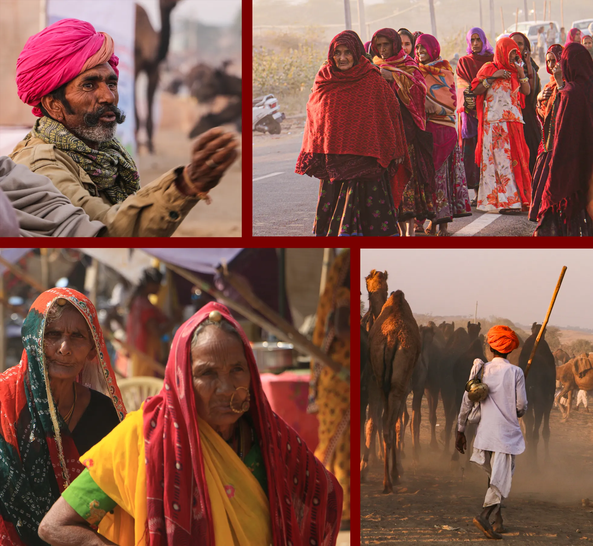

Local people and communities
When this Fair is going on, the people living in the villages all around Pushkar stay quite busy. It’s a high time for irrigation after the rabi sowing just concluded. The famous Pushkar roses are in full bloom, the plucking goes on. This is also a high time for Hindu weddings and highly auspicious Kartik month related rituals. The predominant community living in the villages around Pushkar are from Rawat caste. During the Fair days, they often are busy with family weddings and Kartik month related rituals. To understand their life, you may spend some time exploring around the countryside and watch their processions, celebrations and their rose farming. Pushkar takes the place of heart in the map of Rajasthan. It’s central and gives a feeling of being an accessible retreat by communities belonging to all the regions of Rajasthan. It sits over the great geographical divide of Rajasthan which is known as the Aravalli hills. To its west is the vast arid Thar Desert and on the East are the fertile plains of Eastern Rajasthan. Many gypsies like the Kalbelias are found concentrated in Pushkar region. Rajasthan’s biggest river Luni, though seasonal, originates from a spot very close to Pushkar. The Aravali in the form of a shrubs and dry forests ridge extends all the way into south Rajasthan. Due to this wilderness, the keepers of camels known as Raikas and the horses patronised by the martial communities could always travel undisturbed. This is one big reason for the animal fair happening here. The lake of Pushkar is among the top holiest spots for the Hindu world. Those who permanently live around this Holy Lake are predominantly Brahmins. Pushkar Fair time is a phenomenal time. One set of people motivates another set of people to go there. People on buses, in overloaded jeeps or using any mode reach here in all their colourful attires, fineries and identities. There will be Mirasis from Kuchaman, Dholis from Barmer, magicians from Sikar, cameleers from Bundi, Raikas from Pali; the list can go on and on. In Pushkar you will see the people of Rajasthan in the range and variety for which you’ll otherwise spend lots of time searching in Rajasthan’s vast geography.
